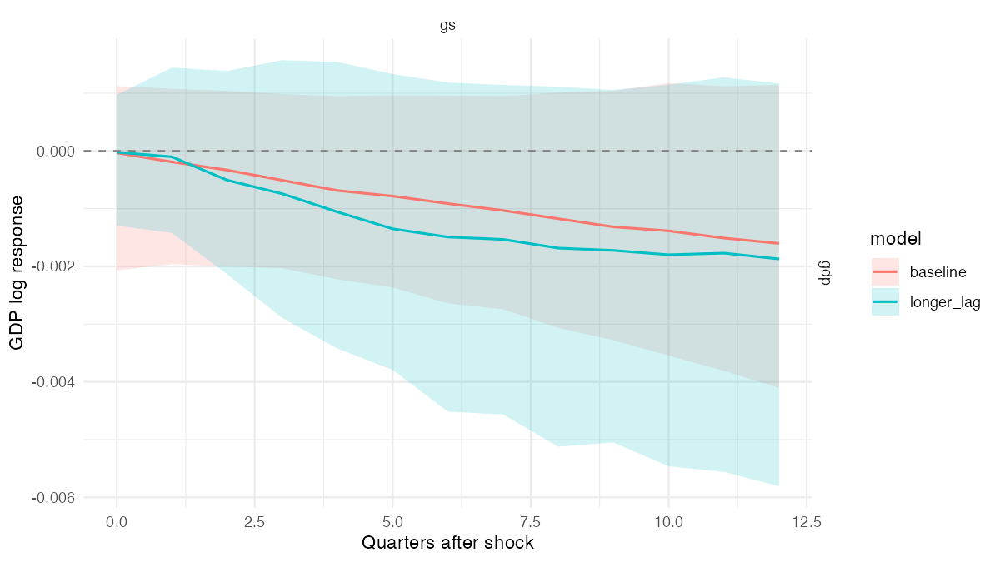
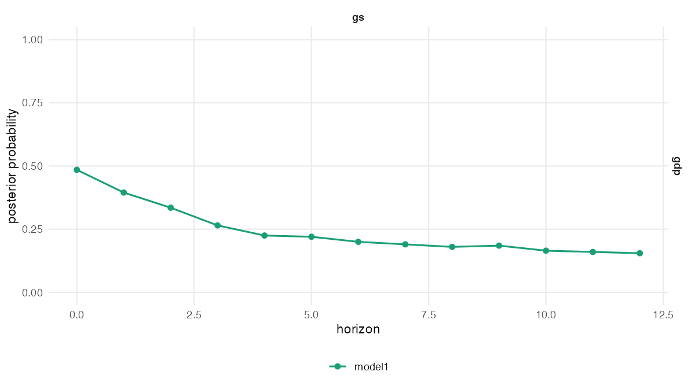

Inference and Comparison
Source:vignettes/inference-and-comparison.Rmd
inference-and-comparison.RmdLoad the demonstration models
These fits contain 200 retained draws each, for illustration rather
than sampling-adequacy claims. Use ?posterior_provenance
for column definitions; use help(package = "bsvarPost") for
offline function documentation.
library(bsvarPost)
post <- readRDS(system.file("extdata", "fiscal_post_bsvar.rds",
package = "bsvarPost", mustWork = TRUE))
post_alt <- readRDS(system.file("extdata", "fiscal_post_bsvar_alt.rds",
package = "bsvarPost", mustWork = TRUE))This vignette presents posterior inference and model comparison for
quantities obtained from Bayesian structural vector autoregressions. The
empirical example compares two lag orders for models estimated using
bsvars::us_fiscal_lsuw. The analysis focuses on the
response of GDP to a government-spending shock, without imposing its
sign or magnitude.
The precomputed posterior objects contain 200 retained draws. Any
compatible posterior object estimated with bsvars or
bsvarSIGNs can be used instead.
Comparison of model specifications
The compare_irf() function computes posterior summaries
for several model specifications and returns them in a single table. In
this example, the comparison assesses sensitivity of the impulse
responses to the lag order. Named arguments identify the specifications,
while the remaining columns have the same interpretation as in
tidy_irf().
comparison <- compare_irf(
baseline = post,
longer_lag = post_alt,
horizon = 12,
probability = 0.90
)
subset(
comparison,
variable == "gdp" & shock == "gs" & horizon %in% c(0, 4, 8, 12),
select = c(model, horizon, median, lower, upper))
#> # A tibble: 8 × 5
#> model horizon median lower upper
#> <chr> <dbl> <dbl> <dbl> <dbl>
#> 1 baseline 0 -0.0000337 -0.00207 0.00112
#> 2 baseline 4 -0.000686 -0.00222 0.000949
#> 3 baseline 8 -0.00117 -0.00306 0.00101
#> 4 baseline 12 -0.00160 -0.00410 0.00114
#> 5 longer_lag 0 -0.0000230 -0.00129 0.000971
#> 6 longer_lag 4 -0.00106 -0.00342 0.00154
#> 7 longer_lag 8 -0.00168 -0.00512 0.00111
#> 8 longer_lag 12 -0.00187 -0.00581 0.00117Differences in posterior medians or credible intervals describe sensitivity to the model specification. They do not provide a formal model-selection criterion. The corresponding functions compare CDMs, FEVDs, forecasts, and historical-decomposition events.
comparison_gdp <- subset(comparison, variable == "gdp" & shock == "gs")
figure <- ggplot2::autoplot(comparison_gdp) +
ggplot2::labs(x = "Quarters after shock", y = "GDP log response")
GDP IRF to gs, horizons 0–12. Baseline p=1 and longer_lag p=3; lines and ribbons are medians and pointwise 90% equal-tailed intervals in original log units, without additional scaling.
Posterior probabilities of hypotheses
Pointwise posterior probabilities
The hypothesis_irf() function reports the proportion of
posterior draws that satisfy a specified inequality at selected
horizons. The hypothesis below states that the response of GDP is
positive.
positive_gdp <- hypothesis_irf(
post,
variables = "gdp",
shocks = "gs",
horizon = c(0, 4, 8, 12),
relation = ">",
value = 0
)
positive_gdp[, c("horizon", "posterior_prob", "median_gap",
"lower_gap", "upper_gap")]
#> # A tibble: 4 × 5
#> horizon posterior_prob median_gap lower_gap upper_gap
#> <dbl> <dbl> <dbl> <dbl> <dbl>
#> 1 0 0.485 -0.0000337 -0.00207 0.00112
#> 2 4 0.225 -0.000686 -0.00222 0.000949
#> 3 8 0.18 -0.00117 -0.00306 0.00101
#> 4 12 0.155 -0.00160 -0.00410 0.00114The posterior_prob column gives the posterior
probability of the inequality, conditional on the model specification;
it is not a p-value. The gap columns summarise the posterior
distribution of the response minus the threshold and retain information
about the magnitude of the response. The hypothesis_cdm()
function provides the corresponding inference for cumulative
responses.
figure <- plot_hypothesis(post, type = "irf", variable = "gdp", shock = "gs",
horizon = 0:12, relation = ">", value = 0)
Posterior probability that the GDP response to gs is above zero at each horizon 0–12. These are probabilities, not response magnitudes or credible intervals.
Joint posterior probabilities
Pointwise probabilities differ from the probability that all
conditions are satisfied simultaneously. The
joint_hypothesis_irf() function evaluates the intersection
of the inequalities within each posterior draw. The hypothesis below
requires a positive response from impact through horizon 8.
positive_path <- joint_hypothesis_irf(
post,
variable = "gdp",
shock = "gs",
horizon = 0:8,
relation = ">",
value = 0
)
positive_path[, c("posterior_prob", "n_constraints")]
#> # A tibble: 1 × 2
#> posterior_prob n_constraints
#> <dbl> <int>
#> 1 0.145 9The joint posterior probability can be considerably smaller than the
pointwise probabilities because all nine inequalities must hold in the
same posterior draw. The joint_hypothesis_cdm()
function provides the corresponding inference for cumulative response
paths.
Posterior probabilities for response magnitudes
A sign hypothesis does not describe the magnitude of the response.
Suppose 0.001 log units (approximately a 0.1% change in
GDP) is a prespecified threshold for illustration. Its economic
relevance must be justified for the application, rather than inferred
from this example. The magnitude_audit() function reports
the posterior probability that the absolute response exceeds this
threshold at horizon 8.
material_response <- magnitude_audit(
post,
type = "irf",
variable = "gdp",
shock = "gs",
horizon = 8,
relation = ">",
value = 0.001,
absolute = TRUE
)
material_response[, c("posterior_prob", "median_gap",
"lower_gap", "upper_gap")]
#> # A tibble: 1 × 4
#> posterior_prob median_gap lower_gap upper_gap
#> <dbl> <dbl> <dbl> <dbl>
#> 1 0.605 0.000285 -0.000897 0.00242The threshold should be determined by the variable transformation and
the empirical application rather than selected from the posterior
results. Setting type = "cdm" gives the corresponding
probability for cumulative dynamic multipliers. The available scaling
options are documented in magnitude_audit().
Simultaneous credible bands
Ordinary credible intervals provide pointwise coverage. A 90%
simultaneous credible band uses one sup-norm critical value for the
selected response path, such that at least 90% of retained posterior
draws lie within the band over the complete selection. The critical
value is an empirical order statistic; ties can increase the coverage.
achieved_coverage reports the fraction actually covered.
This is a finite-sample statement, not an exact guarantee about the
underlying posterior distribution.
gdp_band <- simultaneous_irf(
post,
horizon = 12,
probability = 0.90,
variables = "gdp",
shocks = "gs"
)
gdp_band[gdp_band$horizon %in% c(0, 4, 8, 12),
c("horizon", "median", "lower", "upper", "simultaneous_prob", "achieved_coverage")]
#> # A tibble: 4 × 6
#> horizon median lower upper simultaneous_prob achieved_coverage
#> <dbl> <dbl> <dbl> <dbl> <dbl> <dbl>
#> 1 0 -0.0000337 -0.00270 0.00264 0.9 0.9
#> 2 4 -0.000686 -0.00336 0.00198 0.9 0.9
#> 3 8 -0.00117 -0.00384 0.00150 0.9 0.9
#> 4 12 -0.00160 -0.00427 0.00107 0.9 0.9The band is conditional on the response variables, structural shocks,
and horizons used in its construction. Expanding this set generally
widens the band. The simultaneous_cdm()
function constructs simultaneous bands for cumulative responses, and plot_simultaneous()
plots the resulting response paths.
Representative posterior draws
A response path formed from pointwise posterior medians need not
correspond to a retained parameter draw. The
median_target_irf() function selects the draw closest to
the median target over the specified responses and horizons. Including
both GDP and government spending in the target ensures that both
reported paths correspond to the same structural model draw.
representative <- median_target_irf(
post, horizon = 12,
variables = c("gdp", "gs"),
shocks = "gs", horizons = 0:12
)
representative$draw_index
#> [1] 186
rep_path <- summary(representative)
subset(
rep_path,
variable == "gdp" & shock == "gs" & horizon %in% c(0, 4, 8, 12),
select = c(horizon, median, draw_index, method))
#> # A tibble: 4 × 4
#> horizon median draw_index method
#> <dbl> <dbl> <int> <chr>
#> 1 0 -0.000460 186 median_target
#> 2 4 -0.000863 186 median_target
#> 3 8 -0.00129 186 median_target
#> 4 12 -0.00172 186 median_targetThis selection provides one internally consistent structural model for calculations that require a single draw. It is not a measure of posterior uncertainty; the posterior distribution and its credible intervals should be reported separately. The same selection is available for CDMs. For sign-restricted models, the most-likely admissible draw provides a distinct representative selection.
The introduction shows a filtered representative-path plot. Here the selection includes both GDP and spending; it can therefore select a different draw.
Timing and persistence of responses
The response-timing functions compute each timing quantity for every
posterior draw and then summarise its posterior distribution. Thus,
inference about timing does not rely on a single posterior median
response. The example below analyses persistence in the response of
government spending to its own shock over 20 quarters. This longer
horizon is chosen to examine persistence beyond the introductory
12-quarter window. The threshold 0.015 is in log spending
units (approximately 1.5%), under the model’s structural-shock
normalization; it is an illustrative cutoff rather than a generally
meaningful benchmark.
peak <- peak_response(post, horizon = 20, variables = "gs", shocks = "gs",
absolute = TRUE)
duration <- duration_response(
post, horizon = 20, variables = "gs", shocks = "gs",
relation = ">", value = 0, mode = "consecutive")
half_life <- half_life_response(
post, horizon = 20, variables = "gs", shocks = "gs", baseline = "peak")
threshold <- time_to_threshold(
post, horizon = 20, variables = "gs", shocks = "gs",
relation = "<", value = 0.015)
data.frame(
question = c("absolute peak", "positive spell", "half-life", "below 0.015"),
posterior_median = c(
peak$median_horizon,
duration$median_duration,
half_life$median_half_life,
threshold$median_horizon
),
unit = c("horizon", "periods", "periods after peak", "horizon"),
reached_prob = c(NA, NA, half_life$reached_prob, threshold$reached_prob)
)
#> question posterior_median unit reached_prob
#> 1 absolute peak 0.0 horizon NA
#> 2 positive spell 21.0 periods NA
#> 3 half-life 15.0 periods after peak 0.85
#> 4 below 0.015 11.5 horizon 0.98For the half-life and threshold summaries, reached_prob
gives the posterior probability that the event occurs within the
selected horizon. The conditional median should be interpreted together
with this probability. peak_response() also reports the
posterior distribution of the peak value. Alternative definitions are
available for duration_response(),
half_life_response(),
and time_to_threshold().
Summary of posterior inference
- The
compare_*()functions evaluate sensitivity across model specifications. - The
hypothesis_*()functions compute pointwise posterior probabilities. - The
joint_hypothesis_*()functions evaluate whether all selected inequalities hold simultaneously. - The
magnitude_audit()function evaluates a prespecified, economically relevant threshold. - The
simultaneous_*()functions construct credible bands for an entire selected response path. - A median-target draw provides one coherent retained model draw when it is required.
- Response-timing summaries describe when, for how long, and with what probability a response reaches a specified event. They complement the posterior distribution of the response.
For posterior diagnostics and representative draws in sign-restricted models, see Analysis of Sign-Restricted Models. The reference index documents related variants and plotting methods.